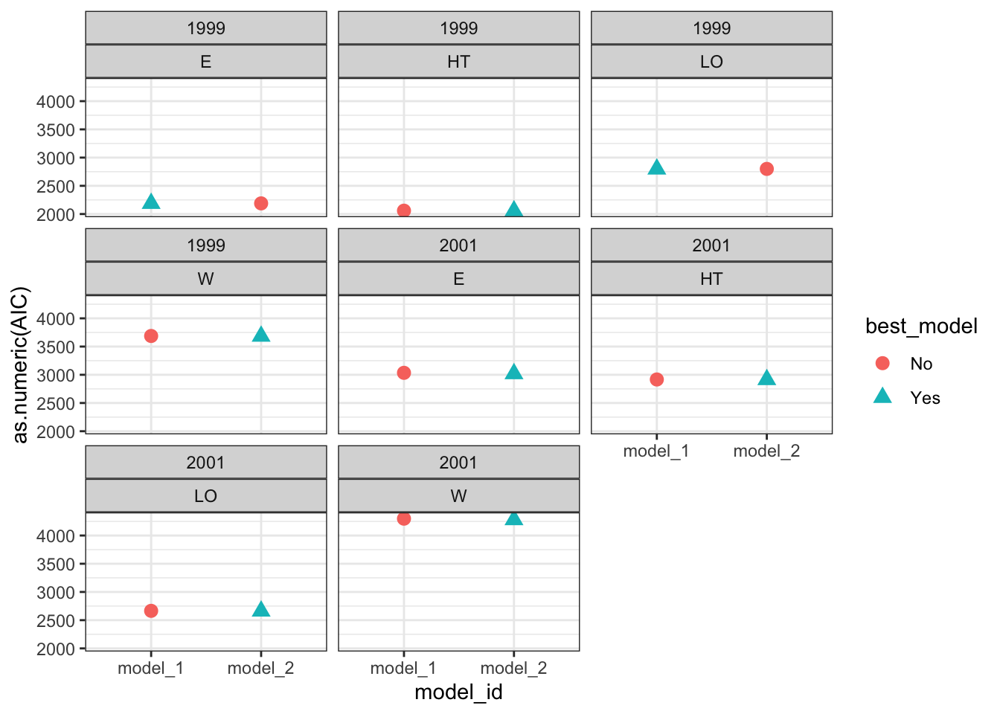
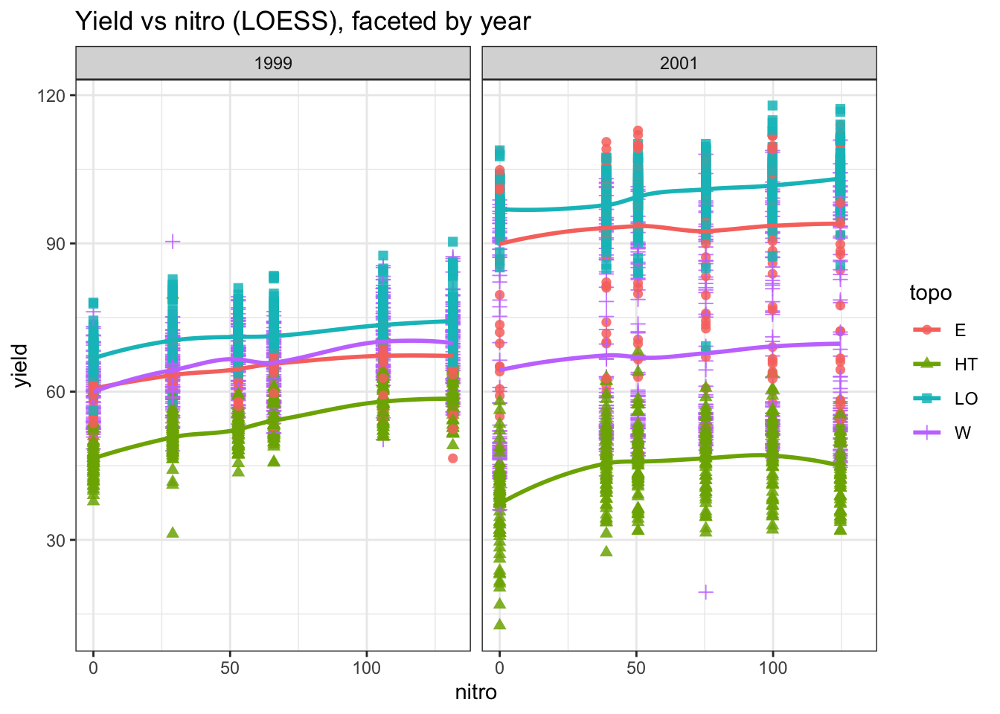
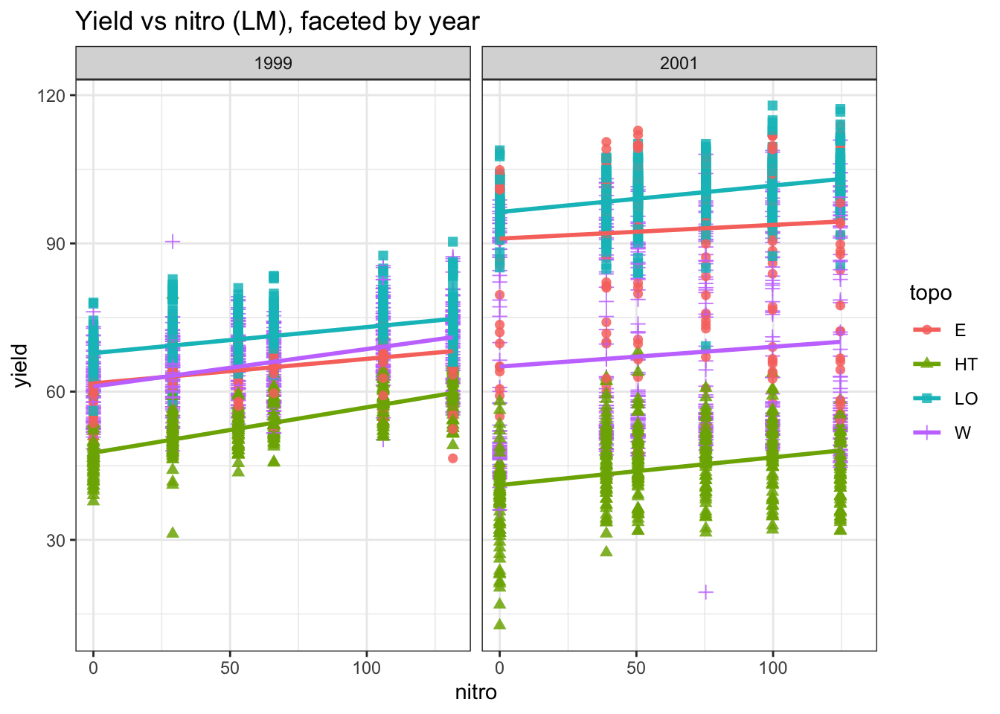

This lesson explores iteration in R, focusing on the power of the purrr package for functional programming. We’ll compare traditional for loops with purrr’s map() functions to illustrate more efficient and readable approaches to iteration.
Required packages for today
Show code
library(pacman)# to install and load packages fasterp_load(dplyr, tidyr)# data wranglingp_load(purrr)# iteration mappingp_load(ggplot2)# plotsp_load(agridat)# datap_load(nlme, broom.mixed, car, performance)# mixed models workp_load(emmeans, multcomp, multcompView)# multiple comparisonsp_load(ggplot2)
1 Introduction to Iteration
Iteration is a common programming task, typically used to apply a function over elements of a dataset. In R, this can be achieved using:
With purrr, we can achieve the same result in a more elegant and functional style:
Show code
# Let's just square the numberslist_output<-purrr::map(numbers, ~.x^2)# Returns a listnumeric_output<-map_dbl(numbers, ~.x^2)# Returns a numeric vectordf_output<-purrr::map_df(as.data.frame(numbers), ~.x^2)list_output# List format
map(), the most general form, returns a list by default.
These functions are part of an iterative approach where a function is mapped over elements of a list or vector.
5 Using the purrr Package for Iteration
The purrr package provides several mapping functions to facilitate iteration:
map(x, f): Applies a function f to each element of x.
map2(x, y, f): Applies a function f to corresponding elements of x and y.
pmap(list, f): Applies a function f to multiple arguments provided as a list of vectors or data frames.
5.1 Practical Application
A common workflow involves combining group_by() and nest() to create nested data frames for iteration. You can then use mutate() along with map() to apply a function to each nested data frame:
year lat long yield nitro topo bv rep nf
1 1999 -33.05113 -63.84886 72.14 131.5 W 162.60 R1 N5
2 1999 -33.05115 -63.84879 73.79 131.5 W 170.49 R1 N5
3 1999 -33.05116 -63.84872 77.25 131.5 W 168.39 R1 N5
4 1999 -33.05117 -63.84865 76.35 131.5 W 176.68 R1 N5
5 1999 -33.05118 -63.84858 75.55 131.5 W 171.46 R1 N5
6 1999 -33.05120 -63.84851 70.24 131.5 W 170.56 R1 N5
6.2 Prepare the data
Show code
data_corn_01<-data_corn_00%>%# Select only necessary variablesdplyr::select(year, topo, rep, nf, yield)%>%# Group bygroup_by(year, topo)%>%# Create nested data framesnest(my_data =c(rep, nf, yield))
6.3 Create functions
6.3.1 Rep (block) as fixed
Show code
# SIMPLEST MODELfit_block_fixed<-function(x){lm(# Response variableyield~# Fixed (treatment)nf+# Block as fixed toorep,# Data data =x)}
6.3.2 Rep (block) as random
Show code
# RANDOM BLOCK (mixed model)fit_block_random<-function(x){nlme::lme(# Response variableyield~# Fixednf,# Random random =~1|rep,# Data data =x)}
6.4 Fit models with mapping
Show code
models<-data_corn_01%>%# BLOCK as FIXED mutate(model_1 =map(.x=my_data, .f=fit_block_fixed))%>%# BLOCK as RANDOMmutate(model_2 =map(.x=my_data, .f=fit_block_random))%>%# Data wranglingpivot_longer(cols =c(model_1:model_2), # show alternative 'contains' model names_to ="model_id", values_to ="model")%>%# Map over model columnmutate(results =map(model, broom.mixed::augment))%>%# Performancemutate(performance =map(model, broom.mixed::glance))%>%# Extract AICmutate(AIC =map(performance, ~.x$AIC))%>%ungroup()
6.5 Model selection
Compare models performance
Show code
# Visual model selectionbest_models<-models%>%group_by(year, topo)%>%# Use case_when to identify the best modelmutate(best_model =case_when(AIC==min(as.numeric(AIC))~"Yes",TRUE~"No"))%>%ungroup()# Plotbest_models%>%ggplot()+geom_point(aes(x =model_id, y =as.numeric(AIC), color =best_model, shape =best_model), size =3)+facet_wrap(year~topo)+theme_bw()

Show code
# Final modelsselected_models<-best_models%>%dplyr::filter(best_model=="Yes")
6.6 Run ANOVA
Estimate the effects of factor under study
Show code
models_effects<-selected_models%>%# Type 3 Sum of Squares (Partial SS, when interactions are present)mutate(ANOVA =map(model, ~Anova(., type =3)))# Extract ANOVASmodels_effects$ANOVA[[1]]
# MULTCOMPARISON# emmeans and cld multcomp# We need to specify ourselves the most important interaction to perform the comparisonsmult_comp<-models_effects%>%dplyr::filter(topo=="HT")%>%# Comparisons estimates (emmeans)mutate(mc_estimates =map(.x=model, ~emmeans(object=.x, ~nf)))%>%# Assign letters and p-value adjustment (multcomp)mutate(mc_letters =map(mc_estimates, ~as.data.frame(# By specifies a strata or level to assign the letterscld(object=., decreasing =TRUE, details=FALSE, reversed=TRUE, alpha=0.05, adjust ="tukey", Letters=letters))))
7 Plotting
We can also use mapping to create multiple plots at once. ## data preparation
Show code
# Unnest datadata_plot<-data_corn_00
7.1 plotting function
Show code
plot_yield_vs_nitro<-function(data, x_var, y_var, group_var, facet_var,smooth_method="loess", se=FALSE, title=NULL){ggplot(data, aes_string(x =x_var, y =y_var))+geom_point(aes_string(color =group_var, fill =group_var, shape =group_var), size =2, alpha =0.85)+geom_smooth(aes_string(color =group_var, fill =group_var), method =smooth_method, se =se)+scale_color_brewer(palette ="Set1")+scale_fill_brewer(palette ="Set1")+facet_wrap(as.formula(paste("~", facet_var)))+theme_bw()+labs( title =title, x =x_var, y =y_var, color =group_var, fill =group_var, shape =group_var)}
We can also pass options for plots as vectors or list
Show code
methods<-c("loess", "lm")ses<-c(TRUE, FALSE)titles<-c("LOESS model, faceted by year","LM model, faceted by year")
7.2 Create plots with pmap()
Show code
plots<-pmap(list( smooth_method =methods, se =ses, title =titles, facet_var =rep("year", length(methods)), group_var =rep("topo", length(methods))),function(smooth_method, se, title, facet_var, group_var){plot_yield_vs_nitro( data =data_plot, x_var ="nitro", y_var ="yield", group_var =group_var, facet_var =facet_var, smooth_method =smooth_method, se =se, title =title)})
Warning: `aes_string()` was deprecated in ggplot2 3.0.0.
ℹ Please use tidy evaluation idioms with `aes()`.
ℹ See also `vignette("ggplot2-in-packages")` for more information.
7.3 Display plots
Show code
# use walk to print them all at oncewalk(.x=plots, .f=print)
`geom_smooth()` using formula = 'y ~ x'

`geom_smooth()` using formula = 'y ~ x'

8 Final comments
Iteration is a fundamental skill in data science, and purrr provides an expressive, efficient, and tidy approach to iteration. By using map(), map2(), and pmap(), we can iterate over multiple variables seamlessly, avoiding verbose loops while improving readability and maintainability.